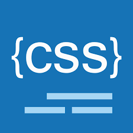
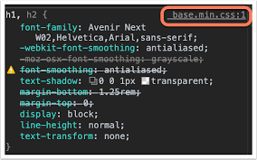
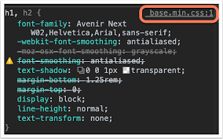

¿Qué es CSS?
CSS (siglas en inglés de Cascading Style Sheets), en español «Hojas de estilo en cascada», es un lenguaje
de diseño gráfico para definir y crear la presentación de un documento estructurado escrito en un lenguaje
de marcado.2 Es muy usado para establecer el diseño visual de los documentos web, e interfaces de usuario
escritas en HTML o XHTML; el lenguaje puede ser aplicado a cualquier documento XML, incluyendo XHTML, SVG,
XUL, RSS, etcétera. Junto con HTML y JavaScript, CSS es una tecnología usada por muchos sitios web para
crear páginas visualmente atractivas, interfaces de usuario para aplicaciones web y GUIs para muchas
aplicaciones móviles (como Firefox OS)
CSS está diseñado principalmente para marcar la separación del contenido del documento y la forma de presentación
de este, características tales como las capas o layouts, los colores y las fuentes.4 Esta separación busca mejorar
la accesibilidad del documento, proveer más flexibilidad y control en la especificación de características
presentacionales, permitir que varios documentos HTML compartan un mismo estilo usando una sola hoja de estilos
separada en un archivo .css, y reducir la complejidad y la repetición de código en la estructura del documento.

Selectores
Los selectores declaran qué etiquetas se le aplican a los estilos que coincidan con la etiqueta o atributo señalados
en la regla. Los selectores pueden aplicarse a:
- Todos los elementos de un tipo, como los párrafos
- Elementos seguidos de un atributo, en particular: id, class
Las clases y los identificadores son sensibles a las mayúsculas, comienzan con letras, y pueden incluir caracteres
alfanuméricos y guiones bajos. Una clase se aplica a cualquier número de elementos. Un identificador se aplica a un
solo elemento. Las pseudoclases son usadas en los selectores CSS para permitir el formateo usando información que no
está incluida en el documento. Un ejemplo de una pseudoclase muy usada es :hover, que identifica el contenido que está
siendo apuntado por un puntero, como el cursor del ratón. Este nombre se añade al selector, de esta manera: a:hover o
#elementid:hover. Una pseudoclase clasifica elementos, como :link o :visited, mientras que un pseudoelemento hace una
selección de elementos parciales, como ::first-line o ::first-letter.
 

Fuentes
Los estilos CSS puede ser provistos desde varias fuentes. Esas fuentes pueden ser el navegador web, el usuario y el
diseñador. La información del diseñador puede ser clasificada de las siguientes formas: inline, media type, importancia,
especificidad del selector, orden de reglas, herencia y definición de propiedades. La información de los estilos CSS puede
estar en un documento separado o puede estar embebido dentro de un documento HTML. Múltiples hojas de estilos pueden ser
importadas al mismo tiempo. Los diferentes estilos pueden ser aplicados dependiendo de la salida del dispositivo usado en
ese momento; por ejemplo, la versión para monitores puede ser diferente de la versión impresa, así que los diseñadores pueden
aplicar diferentes estilos dependiendo del dispositivo usado.
Una de las metas de CSS es permitir a los usuarios un mayor control sobre la presentación. Algunas personas que encuentran a
los encabezados rojos en itálicas difíciles de leer pueden aplicar una hoja de estilos diferente. Dependiendo del navegador y
del sitio web, un usuario puede escoger entre varias hojas de estilo provistas por los diseñadores, o pueden remover todas las
hojas de estilos añadidas y ver el sitio usando los estilos por defecto del navegador, o pueden sobreescribir solo el estilo de
los encabezados rojos en itálica sin alterar otros atributos.
Ejemplos de formularios HTML+CSS